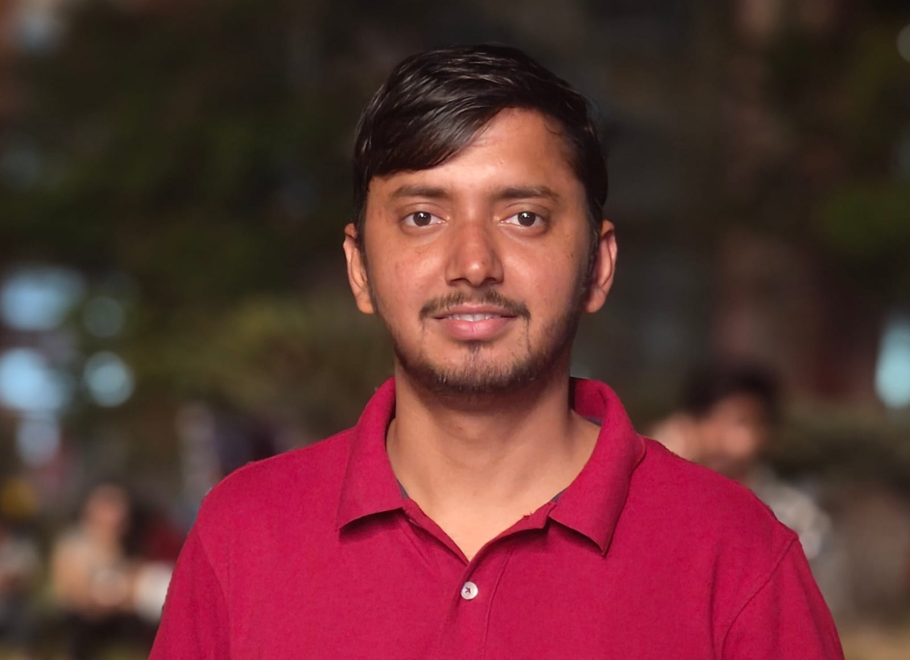

Hello,
I'm Shivam Kumar Mishra
I'm interested in
About Me
Hello there, thanks for visiting my website. I'm Shivam Kumar Mishra, a Ph.D. researcher at BITS Pilani, Hyderabad Campus working on Cosmological Dynamics and Perturbations in Generalised Teleparallel Gravity. I completed my M.Sc. in Mathematics from Deen Dayal Upadhyaya (DDU) Gorakhpur University with a CGPA of 9.2, and my B.Sc. (PCM) from the same university. My research explores teleparallel gravity, an alternative to curvature-based geometrical theories of gravity where torsion governs gravitational interactions. I combine background and perturbative analyses to identify viable models and constrain them using available observational data (e.g., BAO, Hubble, SHoES, Pantheon+, CMB, and GW). Greater emphasis is placed on their dynamical stability at both background and perturbative levels.
Junior Research Fellow | Ph.D. Studentemail : shivamkumarmishra.mt@gmail.com
place : Hyderabad, India
"The important thing is not to stop questioning. Curiosity has its own reason for existing." - Albert Einstein
Cosmological Dynamics and Perturbations in Generalised Teleparallel Gravity
Supervisor: Prof. Bivudutta Mishra
Focus Areas: Teleparallel gravity, Cosmological perturbations, Gravitational waves, Dynamical systems
CGPA: 9.2
Focus Areas: Advanced Mathematics, Theoretical Physics Applications
Physics, Chemistry, Mathematics (PCM)
Foundation: Physics, Chemistry, Mathematics
Exploring teleparallel gravity, an alternative to curvature-based geometrical theories of gravity where torsion governs gravitational interactions. This project combines background and perturbative analyses to identify viable models and constrain them using available observational data (e.g., BAO, Hubble, SHoES, Pantheon+, CMB, and GW). Greater emphasis is placed on their dynamical stability at both background and perturbative levels.
Developed the gauge invariant formalism for cosmological perturbations in F(T, T_G) cosmology. This work provides a systematic approach to studying the stability and evolution of perturbations in teleparallel Gauss-Bonnet gravity, published in Classical and Quantum Gravity (2026).
Investigated the propagation of gravitational waves in teleparallel gravity with Gauss-Bonnet term. The study reveals important features of GW propagation in torsion-based theories, published in Physical Review D (2025).
Analyzed the growth factor of large-scale structures in the framework of teleparallel Gauss-Bonnet gravity. This work shows that teleparallel Gauss–Bonnet (TGB) gravity can explain the growth of cosmic structures in close agreement with standard cosmology while remaining theoretically consistent and stable. (arXiv: 2603.01884).
During my academic journey, I developed strong foundations in mathematical physics, differential geometry and general relativity. My transition to teleparallel gravity research was motivated by the quest to understand gravitational interactions from a different geometric perspective, where torsion rather than curvature plays the fundamental role.
Project: "Dynamical Complexity of Teleparallel Gravity: The Cosmological Implications" (CRG/2023/000475). Funded by Anusandhan National Research Foundation. Research focuses on teleparallel gravity, cosmological perturbations, and constraining models with observational data.
BITS Pilani, Hyderabad Campus
Jan 2025 - Dec 2025
F113 Probability and Statistics (Jan-May 2025): Conducted tutorials, evaluated assignments, and supported student understanding in distributions, hypothesis testing, and inference techniques.
F211 Mathematics III (Aug-Dec 2025): Conducted tutorials, evaluated assignments, and helped students understand differential equations and their applications.
Oct 2022 - Aug 2024
Chegg India (Apr 2024 - Aug 2024): Subject Matter Expert in Mathematics, providing detailed solutions and explanations.
Course Hero (Apr 2024 - Aug 2024): Tutor in Mathematics, helping students understand complex mathematical concepts.
Conducted by: CSIR & UGC
Years: Dec 2023 (AIR-74), Jun 2025 (AIR-54)
Conducted by: IISc Bengaluru
Year 2024: AIR-320
Conference: Physical Interpretations of Relativity Theory, Bauman Moscow State Technical University, Jul 2025
Talk: Cosmological Perturbations in Teleparallel Gauss-Bonnet Gravity
Funding Agency: Anusandhan National Research Foundation
File No: ITS/2025/005783 | Purpose: Attended JGRG 34, Kyoto University, Japan (Jan 2026)
Introductory Workshop on General Relativity and Gravitation (IWGGR2025), AMU, Aligarh
Two-Day Python Bootcamp, BITS Pilani Hyderabad Campus (INYAS-INSA)
Mathematics for AI/ML and Data Science, IIT (ISM) Dhanbad
Discussion Meeting: Future of Gravitational-Wave Astronomy, ICTS Bangalore
Summer School on Gravitational-Wave Astronomy, ICTS Bangalore
General Relativity - A Refresher Course, IUCAA Pune
Mathematics for Machine Learning, BITS Pilani Hyderabad Campus
2nd School on Black Holes and Gravitational Waves, IIT Madras
Numerical and Analytical Relativity (NAR-2024), IIIT Allahabad
Communication Skills (TCS iON) & Fundamentals of Digital Marketing (Google)
Cosmological Perturbations, Dynamical Systems, Cosmological parameter estimation, Parallel Computing
Python, C, Mathematica, LaTeX
English (Fluent), Hindi (Native), Bhojpuri (Native)